Animal Tissues & Organ Systems
Built for the moving exam: name the tissue on the slide, then say where it’s found and what it does. Covers the four tissues plus the integumentary, nervous, digestive and respiratory systems. Read Learn once, drill the Atlas until every micrograph is instant, then run the timed stations in Quiz.
The big picture
Every organ is built from just four tissue types. Learn the four, and the skin and gut become “which tissues, stacked in what order, doing what.”
What a slide can and can’t show
| You see… | Because… | Example |
|---|---|---|
| White empty spaces | Lipid is dissolved by processing solvents; mucus and ground substance don’t take up H&E | Fat cells, foamy myelin, goblet-cell cups, the “empty” look of areolar tissue, shrunken chondrocytes in lacunae |
| Fibres that “disappear” on H&E | Elastic and reticular fibres need special stains | Elastic = black with Verhoeff; reticular = black with silver, magenta with PAS |
| Granules that change colour | Metachromasia: heparin stacks toluidine blue so it looks purple-red | Mast cells |
| Two very different bone slides | Ground section (cells gone, lacunae dark with air) vs decalcified H&E section (pink matrix, cells visible) | Osteons |
| Shapes that depend on the cut | A 2D slice through 3D cells: long cells look round in cross-section, peripheral nuclei can look central in some cuts | Muscle, tendon, nerve |
From this site’s research report on histology accuracy (OUHSC, Duke, U. Michigan, Univ. Vigo histology atlases; Lodish 8e).
Epithelial tissue
Characteristics (Lecture 13)
| Feature | Why it makes sense |
|---|---|
| Densely packed cells, specialized junctions | A barrier with gaps is no barrier. Tight junctions seal, desmosomes anchor, gap junctions connect. |
| Rests on a basement membrane | Anchors the sheet and filters what passes to/from connective tissue below. |
| Avascular | No blood vessels inside, so it is fed by diffusion from the connective tissue underneath. That’s why epithelia are thin-ish and always sit on CT. |
| Active mitosis | Surfaces wear out (skin, gut lining), so cells are replaced constantly. |
| Polarity + surface modifications | The apical side may carry microvilli (absorption), cilia (moving mucus) or stereocilia (long microvilli, e.g., epididymis). |
Functions: protection from mechanical injury, preventing water loss, filtering, selective absorption, secretion, gas exchange, transport across surfaces; some cells are sensory.
Naming = layers + surface shape
Name = number of layers (simple: one; stratified: two or more; pseudostratified: one that looks like many) + shape of the cells at the free surface (squamous: flat; cuboidal: as tall as wide, round central nucleus; columnar: tall, oval nucleus near the base). Stratified tissues are named by the top layer only, because the basal layer is cuboidal/columnar in almost all of them.
The epithelial types at a glance
| Type | ID clue | Function | Location |
|---|---|---|---|
| Simple squamous | One thin flat layer, flat nuclei | Diffusion, filtration, serous fluid | Alveoli, endothelium, mesothelium, Bowman’s capsule |
| Simple cuboidal | One ring of cube cells, round central nuclei | Absorption, secretion, transport | Kidney tubules, small gland ducts, thyroid follicles, ovary surface |
| Simple columnar | Tall cells, basal oval nuclei in one row; microvilli, goblet cells | Absorption, secretion, protection | Stomach, small & large intestines, gallbladder, uterine tubes (ciliated) |
| Pseudostratified ciliated columnar | Nuclei at many heights, cilia, goblet cells; all cells on BM | Mucus traps particles; cilia sweep it out | Trachea, upper respiratory tract, larger bronchi |
| Stratified squamous (keratinized / non-) | Many layers, flat on top; keratinized = pink anucleate top | Protection, prevents infection & water loss | K: epidermis. Non-K: mouth, esophagus, vagina, anal canal |
| Stratified cuboidal | Usually 2 layers of cube cells around a duct | Protects duct walls, helps secrete | Sweat gland ducts, large mammary & salivary ducts |
| Stratified columnar | Columnar top layer, cuboidal below | Protection, secretion | Large salivary ducts, male urethra, conjunctiva |
| Transitional | Dome “umbrella” cells on top, can flatten | Stretch; urine-proof barrier | Bladder, ureters, renal pelvis, part of urethra |
Glandular epithelium
By where secretion goes
Exocrine: through ducts onto a surface or into a cavity (sweat, saliva, digestive enzymes).Endocrine: ductless; hormones into tissue fluid → blood.
By how it’s released
Merocrine: exocytosis, cell stays intact (most glands; eccrine sweat).Apocrine: apex pinches off with secretion (mammary, apocrine sweat).
Holocrine: whole cell bursts (sebaceous gland).
By number of cells
Unicellular: one secretory cell: the goblet cell.Multicellular: many cells (salivary glands, pancreas).
Check yourself (3)
1. Why is pseudostratified epithelium counted as simple? → Every cell touches the basement membrane; only the nuclei are at different heights.
2. A slide shows many layers with flat surface cells that still have nuclei. Name and location? → Non-keratinized stratified squamous; esophagus, mouth, vagina, anal canal.
3. Why can’t epithelium be very thick without a problem? → It is avascular; cells far from the underlying CT would not get enough nutrients by diffusion.
Connective tissue
Three fibre types
| Fibre | Property | Looks like |
|---|---|---|
| Collagen | Strength; resists pulling (most integral CT component per lab handout) | Thick, wavy, pink bundles |
| Elastic | Stretch and recoil | Thin, dark, branching lines |
| Reticular | Delicate supporting network (lymph nodes, spleen, liver) | Fine branched mesh (silver stain) |
| Fibre | What it’s made of | How it’s built (why it behaves that way) |
|---|---|---|
| Collagen (type I) | Tropocollagen: 3 α-chains in a triple helix (~300 nm × 1.5 nm) | Molecules pack quarter-staggered into fibrils (the ~67 nm banding), fibrils into fibres, fibres into bundles. Straight, rope-like and cross-linked, so it barely stretches: great tensile strength. |
| Elastic | Elastin core + fibrillin microfibril sheath | Elastin chains are randomly coiled and cross-linked (desmosine). Pulling straightens the coils; letting go lets them recoil, like rubber. Fibrillin defects → Marfan syndrome. |
| Reticular (type III collagen) | Thin collagen fibrils coated with glycoprotein | Branch and join into a mesh instead of bundling; the sugar coat binds silver, so they look black (argyrophilic). |
Sizes: Mescher, Junqueira’s Basic Histology 16e, ch. 5. See the 3D “Fibre close-ups” models below.
Classification (Lecture 13)
Lab handout grouping: “collagenous CT” (dense regular, dense irregular, loose) vs “specialized CT” (adipose, cartilage, bone, blood). Lecture puts adipose under loose. Same tissues, different filing system; know both.
Loose and dense connective tissue
| Tissue | Structure | Function | Location |
|---|---|---|---|
| Areolar (loose) | Loose collagen + elastic fibres in gel-like ground substance; many cell types | Support, cushioning, nutrient exchange, immune defense, fluid storage | Under epithelia (lamina propria), around vessels/nerves, between muscles, superficial fascia |
| Adipose | Adipocytes filled with one lipid droplet; nucleus at periphery; little ECM | Energy storage, insulation, protection, endocrine, heat (brown fat) | Hypodermis, around kidneys/eyeballs/heart/abdominal organs, breasts |
| Reticular | 3D mesh of type III collagen made by reticular cells; free cells (lymphocytes) in the spaces | Supporting framework (stroma) for soft, cell-rich organs; filters lymph/blood | Lymph nodes, spleen, red bone marrow, liver |
| Dense regular | Parallel collagen bundles; fibroblasts; little ground substance | Resists pull in one direction; transmits muscle force | Tendons, ligaments, aponeuroses |
| Dense irregular | Interwoven collagen bundles in all directions | Resists tension from many directions | Dermis, organ capsules (kidney, liver), joint capsules, GI submucosa |
White vs brown fat: white adipocyte = one large droplet, few mitochondria (storage). Brown adipocyte = many small droplets, lots of mitochondria (heat production, e.g., infants).
Cartilage
Firm, flexible matrix (collagen, chondroitin sulfate, proteoglycans). Chondroblasts make matrix; chondrocytes maintain it and sit in spaces called lacunae. Avascular: nutrients diffuse in from the perichondrium (dense CT covering), which is why cartilage heals slowly. Growth is appositional (added at the surface by perichondrium) or interstitial (from within, chondrocytes dividing → isogenous groups).
| Hyaline | Elastic | Fibrocartilage | |
|---|---|---|---|
| Fibres | Fine type II collagen, not visible (glassy) | Type II + abundant elastic fibres | Thick type I collagen bundles |
| Perichondrium | Yes (except articular surfaces) | Yes | No |
| ID clue | Smooth glassy matrix, isogenous groups | Dark fibre network around lacunae | Chondrocytes in rows between collagen |
| Location | Joints, nose, trachea, larynx, costal cartilage, epiphyseal plates, fetal skeleton | Ear pinna, epiglottis, Eustachian tube, parts of larynx | Intervertebral discs, pubic symphysis, knee menisci, TMJ disc |
| Function | Low-friction surfaces, compression, airway support, bone template | Flexible support, springs back | Shock absorber, tensile + compressive strength |
Bone
Hard mineralized matrix: collagen fibres + calcium phosphate as hydroxyapatite. Four cells: osteoprogenitor (stem cells → osteoblasts), osteoblasts (build: secrete collagen + ground substance that calcium salts then harden), osteocytes (mature, maintain bone, live in lacunae), osteoclasts (break down bone matrix). Functional unit = osteon (Haversian system): concentric lamellae around a central canal, with lacunae linked by canaliculi. Rich blood supply; constantly remodels.
Functions: support, protection, movement, mineral storage, blood cell production, fat storage.
Blood
Fluid CT; matrix = plasma. Erythrocytes (RBCs: carry O₂ via hemoglobin, no nucleus), leukocytes (WBCs: defense), platelets (thrombocytes: cell fragments for clotting). Functions: transport, protection, clotting, regulation.
| WBC | Look | Job |
|---|---|---|
| Neutrophil | Multilobed (3–5) nucleus, pale granules; most abundant WBC | First responder; engulfs bacteria (and fungi) |
| Lymphocyte | Large round nucleus filling most of the cell | Specific immunity: B cells, T cells, NK cells |
| Monocyte | Largest WBC; kidney/bean-shaped nucleus | Phagocytosis; becomes tissue macrophages |
| Eosinophil | Bilobed nucleus, red-orange granules | Parasites; allergies |
| Basophil | Dark purple granules hide the nucleus | Releases histamine and inflammatory mediators |
Check yourself (3)
1. Tendon vs dermis: same fibre, different tissue. Why? → Both are dense collagen; tendon is pulled one way (parallel = dense regular), dermis is pulled every way (interwoven = dense irregular).
2. Which cartilage lacks perichondrium? → Fibrocartilage (articular hyaline cartilage also lacks it).
3. Why do adipocytes look empty on slides? → The lipid dissolves in the solvents used to prepare the slide, leaving a clear space.
Muscle tissue
| Skeletal | Cardiac | Smooth | |
|---|---|---|---|
| Control | Voluntary | Involuntary | Involuntary |
| Striations | Yes | Yes | No |
| Cell shape | Long, cylindrical, unbranched | Short, branched | Spindle, tapered |
| Nuclei | Many, peripheral | Usually 1 (sometimes 2), central | 1, central |
| Special feature | Endo-/peri-/epimysium coverings | Intercalated discs | No visible striations |
| Contraction / fatigue | Fast; can fatigue | Rhythmic, continuous; highly fatigue-resistant | Slow, sustained; fatigue-resistant |
| Location | Attached to bones; face | Myocardium only | Walls of GI tract, vessels, bladder, uterus, ureters; arrector pili; iris/ciliary body |
Skeletal muscle coverings: endomysium around each fibre → perimysium around a bundle (fascicle) → epimysium around the whole muscle. (Nerves copy this pattern: endoneurium, perineurium, epineurium.)
Sliding filament theory
Thin actin filaments slide past thick myosin filaments toward the sarcomere centre. The sarcomere shortens; the filaments themselves do not.
Check yourself (2)
1. Striated, branched, central nucleus, dark lines across fibres? → Cardiac muscle; the lines are intercalated discs.
2. What does Ca²⁺ actually do? → Binds troponin, which shifts tropomyosin off actin’s myosin-binding sites.
Nervous tissue
Location: brain, spinal cord, peripheral nerves, sensory organs and nerve endings. Synapses are where neurons talk to other cells.
Nerve coverings: epineurium (whole nerve; protects from stretching) → perineurium (each fascicle; stable internal environment) → endoneurium (each nerve fibre).
On slides: spinal cord smear = big purple star-shaped motor neuron cell bodies with processes and small glial nuclei around them. Spinal cord H&E = neurons with Nissl bodies in grey matter, neuropil. Nerve cross-section = round fascicles wrapped in perineurium inside epineurium.
The nervous system (Lecture 16)
Four types of organization in animals
Read this table left to right as an evolutionary staircase: each step gathers neurons into fewer, bigger processing centres at the front of the body.
| Type | Key features (lecture) | Examples |
|---|---|---|
| 1 Diffuse (nerve net) | Neurons spread throughout the body as a net; no centralized brain; signals travel in many directions; still allows coordinated responses | Hydra, jellyfish, sea anemones (cnidarians) |
| 2 Ladder-like | Cerebral ganglia act as a simple brain; two longitudinal nerve cords joined by transverse nerves (commissures) → a ladder; sensory structures concentrated at the anterior end | Flatworms (Planaria) |
| 3 Ganglionic | Clusters of neuron cell bodies = ganglia; a cerebral ganglion (brain); usually a ventral nerve cord; segmental ganglia coordinate each body segment | Annelids (earthworm), arthropods (insects) |
| 4 Centralized | Brain + spinal cord; brain = main integration and control centre; spinal cord relays between brain and periphery; specialized brain regions | Vertebrates: fishes, amphibians, reptiles, birds, mammals |
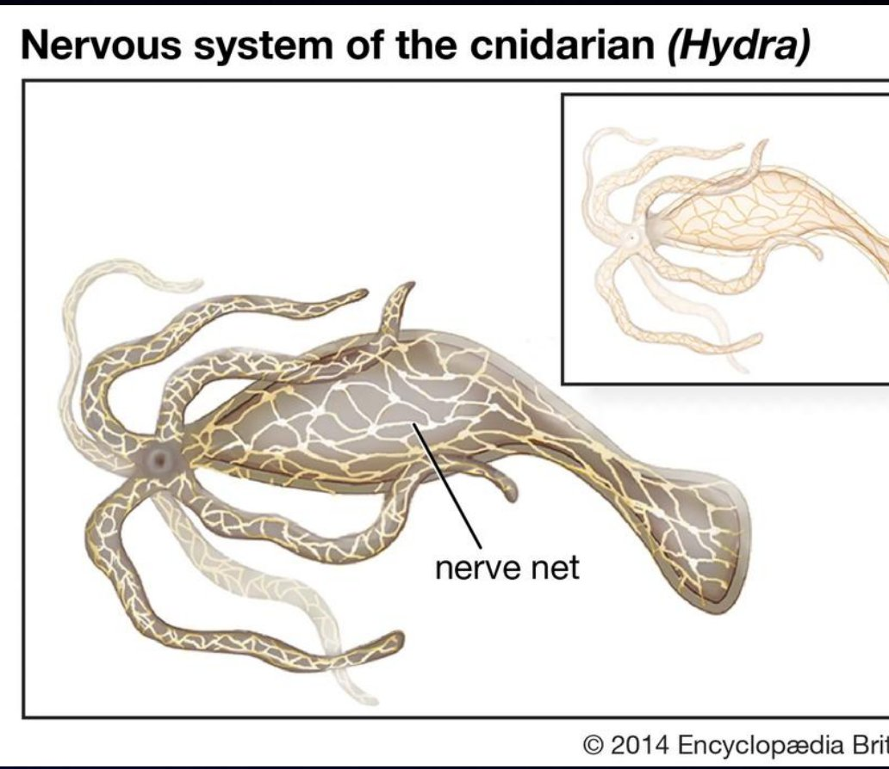
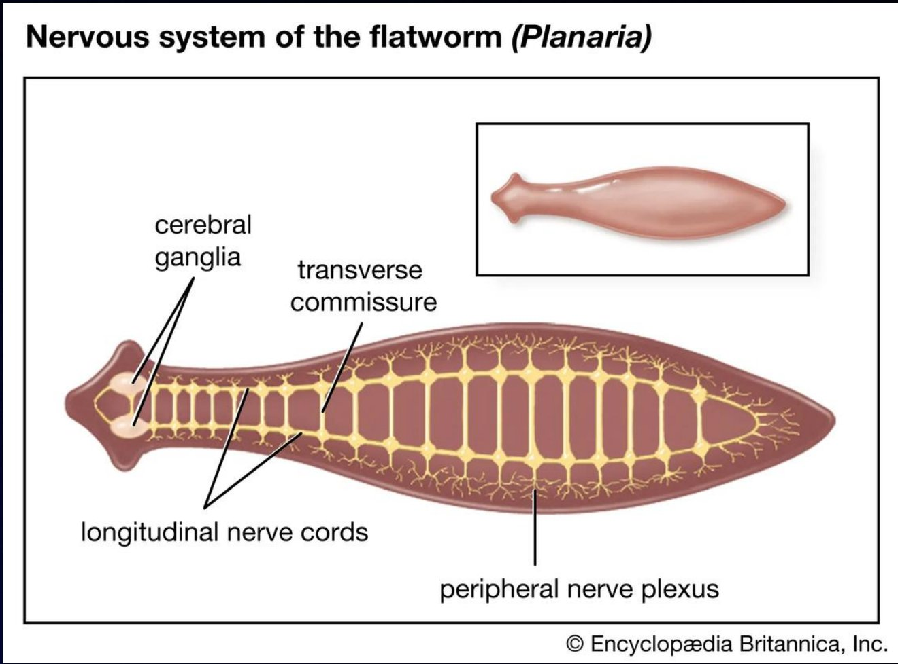
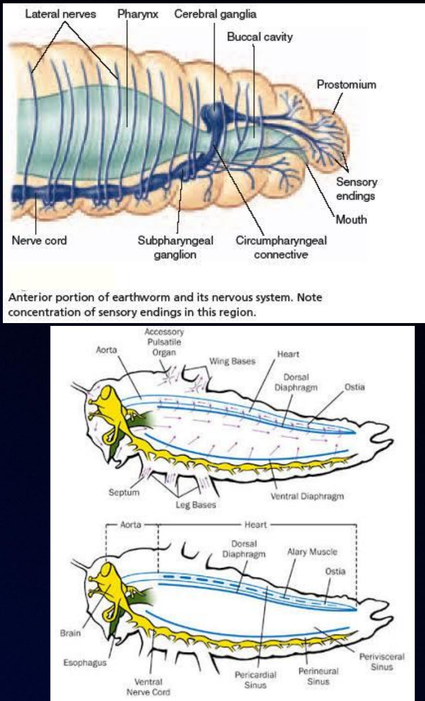
Five evolutionary trends (lecture order)
- Neuronal specialization: cells that can receive and transmit signals appear.
- Cephalization: nervous tissue and sense organs concentrate at the anterior end (head). Why: the front end meets the environment first when an animal moves forward.
- Centralization: neurons gather into ganglia and brains.
- Regional specialization: distinct regions take on distinct jobs (cerebrum, cerebellum…).
- Increasing integration: more capacity to combine sensory information, coordinate movement and produce complex behaviour.
Organization of the human nervous system
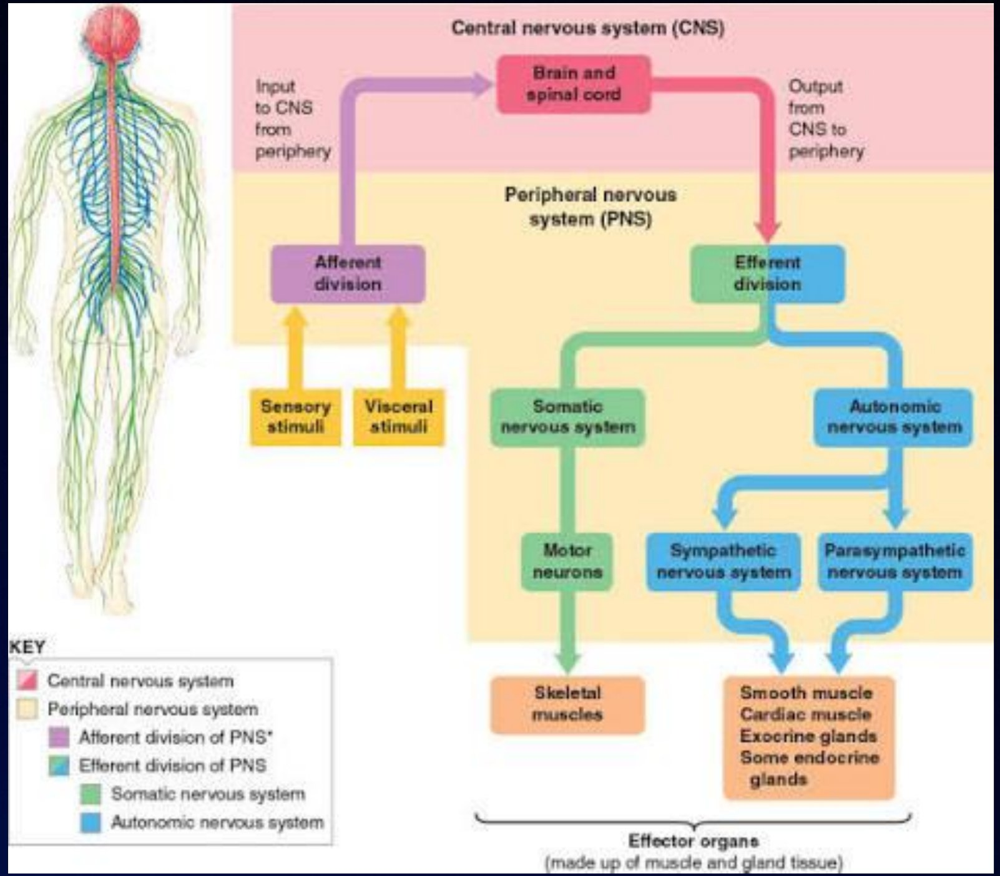
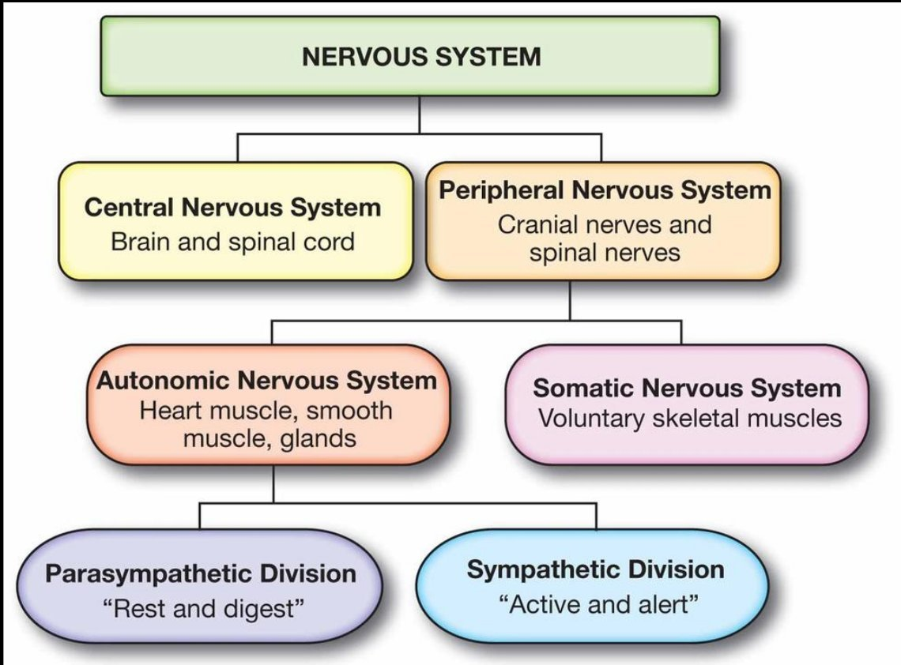
I. Central nervous system (CNS)
The primary command and processing centre: collects, processes and responds to information from inside and outside the body. It is the brain and the spinal cord.
1. Brain
Housed in the skull; the main integration and control centre. Interprets sensory information, coordinates voluntary and involuntary activities, and handles thinking, learning, memory, emotion and decision-making.
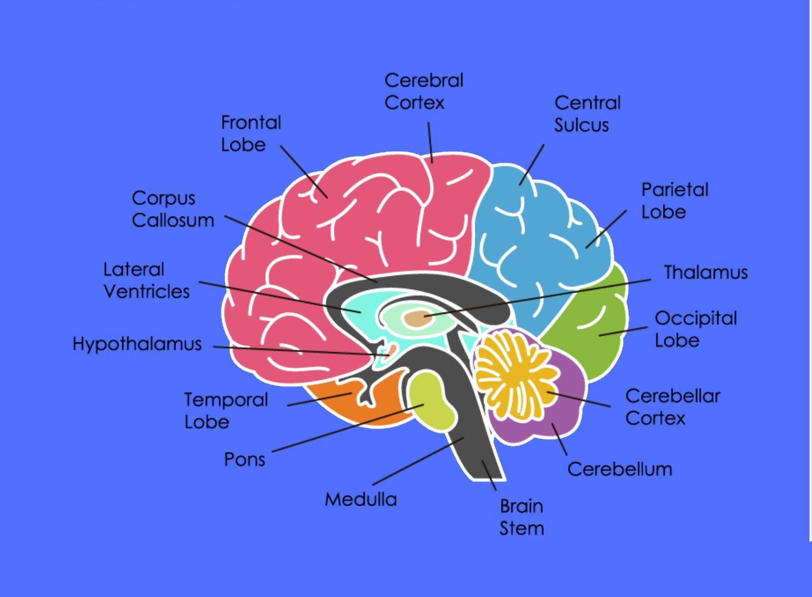
| Region | Function (lecture) |
|---|---|
| Cerebrum | Higher cognition, sensory perception, memory, language, voluntary movement |
| Diencephalon: thalamus | Relays sensory information (to the cerebrum) |
| Diencephalon: hypothalamus | Regulates homeostasis: body temperature, hunger, thirst, endocrine functions |
| Diencephalon: epithalamus | Secretes melatonin (pineal gland) |
| Cerebellum | Coordinates voluntary movement, balance, posture, motor learning |
| Brain stem (midbrain, pons, medulla) | Essential life functions: breathing, heart rate, blood pressure, certain reflexes |
Protection of the CNS
Skull (and vertebral column)
Bone around the brain; supports the face. The vertebral column does the same for the spinal cord.Meninges
Protect from injury, enclose and help circulate CSF, give support and compartments. Outer → inner: dura mater (outermost, toughest) → arachnoid mater (thin, web-like) → pia mater (innermost, most delicate, hugs the brain).Cerebrospinal fluid (CSF)
Clear, colourless fluid around the brain and spinal cord; a protective cushion that keeps a stable environment for nerve cells.2. Spinal cord
Long cylinder of nervous tissue running from the medulla oblongata down the vertebral canal; protected by vertebral column, meninges and CSF. The main communication highway: sensory information up to the brain, motor commands down to muscles and glands.
| Gray matter | White matter | |
|---|---|---|
| Position in the cord | Central (butterfly/H shape) | Surrounds the gray matter |
| Contains | Neuron cell bodies, dendrites, synapses | Mostly myelinated axons |
| Job | Processing and integrating | Ascending (sensory) and descending (motor) pathways |
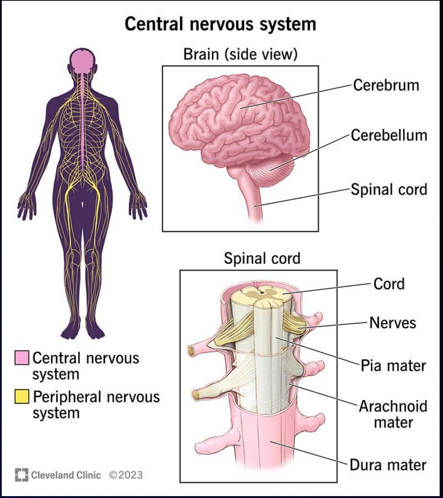
II. Peripheral nervous system (PNS)
All neural structures outside the skull and vertebral column. Nerves are bundles of axons wrapped in endoneurium → perineurium → epineurium (the same coverings you identify on the nerve cross-section slide). They carry sensory (afferent) fibres, motor (efferent) fibres, or both (mixed nerves).
Cranial nerves
Sensory and motor information mainly for the head and neck.Spinal nerves
Between the spinal cord and different regions of the body.Ganglia
Clusters of cell bodies outside the CNS; relay and processing sites.Functional divisions of the PNS
| Division | Direction | Controls / does |
|---|---|---|
| Sensory (afferent) | Receptors → CNS | Detects changes inside and outside the body |
| Motor (efferent) | CNS → effectors | Produces responses |
| a. Somatic | CNS → skeletal muscle | Voluntary: walking, writing, lifting |
| b. Autonomic (ANS) | CNS → smooth muscle, cardiac muscle, glands | Involuntary; maintains homeostasis |
| • Sympathetic | “Fight or flight” / active and alert: prepares the body for action or stress | |
| • Parasympathetic | “Rest and digest”: promotes resting and digestive activities | |
| • Enteric | Network of neurons in the GI tract; regulates intestinal movement and secretion (these are the myenteric and submucosal plexuses in the gut wall) |
Check yourself (4)
1. A flatworm has cerebral ganglia and two nerve cords linked by transverse nerves. Type? → Ladder-like.
2. Which brain region keeps you balanced while walking? → Cerebellum. Which keeps you breathing while asleep? → Brain stem (medulla).
3. Why is white matter white? → It is mostly myelinated axons, and myelin is lipid-rich.
4. Your heart races before an exam. Which division? → Autonomic, sympathetic.
The integumentary system
Functions of the skin
- Barrier: tough, dry, acid mantle, water barrier, UV barrier
- Vitamin D synthesis: UV converts 7-dehydrocholesterol → vitamin D₃ (then liver and kidney activate it)
- Cutaneous absorption: 1–2% O₂ by diffusion; fat-soluble vitamins A, D, E, K absorbed easily; amino acids/steroids diffusing out attract mosquitoes
- Sensation: heat, cold, touch, pressure, vibration, pain
- Thermoregulation: vasodilation/vasoconstriction, sweating
- Also: excretion, immunity (Langerhans cells), blood reservoir, psychological/social (appearance, facial expression)
Invertebrate body coverings
| Group (example) | Covering |
|---|---|
| Protozoa: Paramecium | Pellicle with trichocysts and cilia |
| Protozoa: Amoeba | Plasmalemma (plasma membrane); pseudopodia |
| Porifera: Grantia | Pinacoderm (outer, pinacocytes) · mesohyl (middle, non-living gelatinous) · choanoderm (inner, choanocytes) |
| Cnidaria: Hydra | Epidermis (outer, cuboidal) · mesoglea (jelly-like) · gastrodermis (inner; large ciliated columnar cells) |
| Platyhelminthes: Planaria | Ciliated cuboidal epidermis with rhabdites, dual (adhesive) glands, muscles, parenchyma |
| Platyhelminthes: Fasciola | Syncytial tegument; penetration glands, cyst-producing glands, hooks/suckers/spines for adhesion |
| Nematoda: Ascaris | Non-cellular cuticle · syncytial hypodermis · longitudinal muscles only |
| Annelida: Lumbricus | Non-chitinized cuticle; circular + longitudinal muscles |
| Arthropoda | Cuticle: thin epicuticle (outer) + thick procuticle (exocuticle + endocuticle); epidermis beneath |
| Echinodermata: starfish | Ciliated epidermis; dermis with calcareous ossicles and spines |
Vertebrate integument
Heads-up: the fish, reptile and bird slides are mostly pictures. The notes below come from standard comparative anatomy texts (e.g., Kardong) so you can explain what the pictures show.
| Group | Key features |
|---|---|
| Cartilaginous fish | Placoid scales (dermal denticles: tooth-like, enamel + dentine) projecting through the epidermis; pigment cells in dermis |
| Bony fish | Thin scales of dermal bone in pockets of the dermis, overlapping; mucus-secreting epidermis (lecture figure: epidermis, corium/dermis, subcutis, muscle) |
| Amphibians (frog) | Thin, moist, glandular skin for cutaneous respiration; mucous and poison (granular) glands; chromatophores |
| Reptiles | Dry, heavily keratinized epidermal scales; few glands; shed (molting); waterproof for land |
| Birds | Feathers (keratin) from follicles; thin skin; few glands except the uropygial (preen) gland |
| Mammals | Hair, many glands (sweat, sebaceous, mammary), thick dermis |
Frog skin vs human skin (Lecture 14)
| Basis | Frog | Human |
|---|---|---|
| Epidermal layers | Stratum corneum, stratum Malpighi (Malpighian layer), stratum germinativum | Corneum, lucidum, granulosum, spinosum, basale (germinativum) |
| Dermal layers | Stratum spongiosum (loose, upper) · stratum compactum (dense, lower) | Papillary layer · reticular layer |
| Glands | Poison gland, mucous gland | Sweat gland, sebaceous gland |
| Pigments | Chromatophores | Melanophores (melanocytes) |
| Unique | Poison & mucous glands | Skin derivatives, hair follicles |
Frog subcutaneous layer: loose CT divided into two by lymph spaces, attached to the body wall by septa (that’s why frog skin peels off so easily in dissection).
Human skin, layer by layer
Epidermis: 5 strata (deep → superficial)
| # | Stratum | What’s there | Why |
|---|---|---|---|
| 1 | Basale (germinativum) | Single layer of actively dividing column-shaped basal cells; melanocytes; Merkel cells | Stem-cell layer closest to dermal blood supply; melanin shields dividing DNA |
| 2 | Spinosum | Several layers of keratinocytes; Langerhans (dendritic) cells. Lab: thickest layer (in thin skin) | “Spiny” look = desmosomes pulled apart during processing; immune surveillance |
| 3 | Granulosum | 3–5 layers of flattening keratinocytes with keratohyalin and lamellated granules; cells start to die | Lamellated granules release lipids = the water barrier |
| 4 | Lucidum | Thin translucent zone; thick skin only (palms, soles) | Extra layer where friction is highest |
| 5 | Corneum | Up to ~30 (lab: 10–30) layers of dead keratinized cells; exfoliate | Dead, tough, waterproof shield, constantly shed |
Cells of the epidermis: keratinocytes (keratin), melanocytes (melanin), Langerhans cells (immune), Merkel cells (touch, with sensory nerve endings).
Dermis
Papillary layer (upper; loose areolar; dermal papillae with capillaries and Meissner’s corpuscles for light touch; fingerprints) and reticular layer (deep; dense irregular CT; hair follicles, glands, Pacinian corpuscles for deep pressure/vibration).
Hypodermis
Subcutaneous tissue / superficial fascia; more adipose than dermis. Energy reservoir, thermal insulation. Highly vascular, which is why hypodermic (subcutaneous) injections go here. Fat distribution differs between sexes.
Skin colour
Hemoglobin (red, seen through dermis) · carotene (yellow, from vegetables and egg yolk; concentrates in corneum and subcutaneous fat) · melanin (made by melanocytes, stimulated by UV; yellow, brown, black, reddish hues).
| Abnormal colour | What’s happening |
|---|---|
| Cyanosis | Blue: low blood O₂ (deoxygenated hemoglobin) |
| Jaundice | Yellow: bilirubin buildup (liver disease, hemolysis) |
| Addison’s disease | Bronzing: adrenal insufficiency → high ACTH/MSH stimulates melanin |
| Pallor | Pale: low blood flow or anemia |
| Albinism | Genetic lack of melanin |
| Erythema | Redness: increased blood flow (inflammation, exercise, embarrassment) |
| Hematoma | Bruise: blood clotted under the skin |
Skin markings: hemangiomas (birthmarks; benign capillary tumours: strawberry fades in childhood, port-wine lasts), freckles (flat) and moles (raised): aggregations of melanocytes; flexion creases and lines.
Glands, nails, hair
| Gland | Details |
|---|---|
| Eccrine sweat | Merocrine; watery sweat onto skin surface; thermoregulation |
| Apocrine sweat | Axilla/groin; opens into hair follicles; thicker secretion (scent) |
| Sebaceous | Flask-shaped; duct opens into a hair follicle; oily sebum (holocrine: contains broken-down cells). Lanolin = sheep sebum |
| Ceruminous | Only in the external ear canal; with sebum makes earwax (waterproof, keeps eardrum flexible, bitter repels pests) |
| Mammary | Modified apocrine sweat glands; glandular tissue during pregnancy/lactation; milk lines; extra nipples = polythelia |
Nails: clear hard derivative of the stratum corneum (hard keratin). Grow ~1 mm/week from the nail matrix (proximal growth zone). Parts: free edge, nail body (plate), nail root, lunule, nail fold, nail bed, eponychium (cuticle), hyponychium (under the free edge).
Hair: filament of keratinized cells (hard keratin with disulfide bridges). Shaft above skin, root in follicle. Cross-section: medulla (core), cortex, cuticle. Follicle: oblique tube; bulb at base with vascular dermal papilla; epithelial root sheath (from epidermis) and connective tissue root sheath (from dermis); hair receptors wrap the follicle; arrector pili (smooth muscle) → goose bumps. Types: lanugo (fetal), vellus (fine, children & women), terminal (coarse, scalp). Shape: straight = round, wavy = oval, kinky = flat. Colour: melanin; blond = little melanin; red = trichosiderin (iron pigment); white = air in medulla + no pigment. Grows ~1 mm every 3 days for 2–4 years, then rests 3–4 months. Alopecia/pattern baldness; hirsutism.
Burns
| Degree | Depth | Signs / healing |
|---|---|---|
| 1st (partial thickness) | Epidermis only | Red, painful, edema |
| 2nd (partial thickness) | Epidermis + part of dermis | Blisters; regenerates from hair follicles and sweat glands |
| 3rd (full thickness) | Epidermis, dermis and more | Often needs grafts; fibrosis, disfigurement |
Deaths come from fluid loss, infection and effects of dead tissue (eschar). Treatment: fluid replacement, infection control, debridement, IV proteins and nutrients.
Check yourself (3)
1. Where would you see stratum lucidum? → Thick skin only (palms, soles).
2. Why do 2nd-degree burns heal without grafts but 3rd-degree often don’t? → Hair follicles and sweat glands in the surviving dermis contain epithelial cells that regrow the epidermis; in 3rd-degree burns those are destroyed.
3. Frog dermis layers? → Stratum spongiosum (upper) and stratum compactum (lower).
The digestive system
How animals feed
What: herbivore, carnivore, omnivore. How: suspension (filter) feeders (clams, baleen whales, basking shark, feather-duster worms), substrate/deposit feeders (live in/on food, e.g., leaf-miner caterpillar), fluid feeders (mosquito, leech, aphid), bulk feeders (most animals: eat large pieces).
Functions of the digestive system: energy production, growth and repair, homeostasis, defense.
The six processes
| Process | Meaning | Where | Hormones (lecture) |
|---|---|---|---|
| 1 Ingestion | Taking in food | Mouth (chewing, salivary amylase) | |
| 2 Digestion | Breaking food into absorbable molecules (mechanical + chemical/hydrolysis) | Mouth, stomach, small intestine | Gastrin (stomach; ↑ acid & enzymes), secretin (duodenum; pancreas → bicarbonate), CCK (small intestine; gallbladder → bile, pancreas → enzymes) |
| 3 Absorption | Cells take up monomers | Small intestine (villi, microvilli) | Insulin (glucose into cells), GLP-1 (↑ insulin, slows gastric emptying) |
| 4 Transport | Nutrients carried to cells | Blood and lymph | |
| 5 Assimilation | Cells use nutrients for function, growth, repair | All cells | Growth hormone, thyroid hormones |
| 6 Elimination | Undigested material leaves | Large intestine, rectum, anus | Motilin (intestinal smooth muscle), gastrin |
Macromolecule → monomer: polysaccharides/disaccharides → simple sugars · fats → glycerol + fatty acids · proteins → amino acids · nucleic acids → nucleotides.
Types of digestion
Intracellular
Inside a single cell (food vacuoles + lysosomes): protists, sponges.Extracellular, incomplete
Digestive sac with one opening (gastrovascular cavity): Cnidaria (Hydra), flatworms. Food in and waste out the same way.Extracellular, complete
Alimentary canal from mouth to anus: one-way flow; specialized compartments for digestion, absorption, waste processing.Mammalian alimentary canal
Accessory glands: salivary glands, pancreas, liver, gallbladder. Food moves by peristalsis (waves of smooth muscle contraction); sphincters (ring muscles) regulate passage.
Oral cavity
Mechanical: mastication with heterodont teeth: incisors (cut), canines (tear), premolars and molars (grind). Deciduous (20) vs permanent (32) teeth. Chemical: saliva contains buffers (protect teeth), antibacterial agents, and salivary amylase (hydrolyzes starch and glycogen → smaller polysaccharides and maltose). Tongue shapes food into a bolus. Major salivary glands: parotid, submandibular, sublingual. Tongue surface has papillae (filiform, fungiform, circumvallate/vallate, foliate).
Pharynx and swallowing
Shared air-food passage: nasopharynx, oropharynx, laryngopharynx. Functions: swallowing, air passage, protection against aspiration (epiglottis), immune defense (tonsils). Deglutition stages: voluntary (tongue pushes bolus back) → pharyngeal (reflex; epiglottis covers larynx) → esophageal (peristalsis).
Esophagus
Swallowing into it is voluntary; peristalsis down it is involuntary. Lined by non-keratinized stratified squamous epithelium (tissue link!).
Stomach
Below the diaphragm. Rugae (folds) + elasticity let it expand to ~2 L. Gastric juice: HCl (pH ~2; kills bacteria, breaks down the matrix holding tissue cells together) and pepsin (starts protein digestion; works best in strong acid). Gastric pits contain:
| Cell | Secretes |
|---|---|
| Chief cells | Pepsinogen (inactive pepsin) |
| Parietal cells | HCl |
| Argentaffin cells (enteroendocrine) | Lecture: gastrin; serotonin (synthesize and store) |
| Mucous (neck/surface) cells | Mucus that keeps the stomach from digesting itself |
Small intestine
Longest part (~6 m; “small” refers to diameter). Duodenum (first ~25 cm): most enzymatic digestion; chyme mixes with pancreatic juice, bile and intestinal secretions. Jejunum and ileum: most absorption. Villi and microvilli massively increase surface area.
- Pancreas: enzymes + bicarbonate to neutralize acid (otherwise intestinal enzymes would not work)
- Liver: makes bile, stored and concentrated in the gallbladder. Bile has no enzymes; it emulsifies fats; its pigments leave in feces
- Fats: emulsified by bile, digested by lipase · Proteins: trypsin, chymotrypsin and other proteases → peptides, amino acids · Nucleic acids: nucleases → nucleotides → bases, sugars, phosphates · Carbs: pancreatic amylase
Large intestine
Cecum, colon, rectum. Reabsorbs water and electrolytes, ferments undigested carbohydrates, houses bacterial flora, forms and stores feces.
Accessory organs
Liver: bile, stores glucose as glycogen, makes plasma proteins, stores fat-soluble vitamins, detoxification. Gallbladder: stores and concentrates bile. Pancreas: pancreatic juice (exocrine acini) + hormones insulin and glucagon (endocrine islets).
Adaptations
Dentition matches diet (carnivores: big canines, shearing teeth; herbivores: broad grinding molars). Gut length: long in herbivores (plant matter hard to digest; more time and surface area), short in carnivores. Symbiosis: microbes in a cecum (horses, rabbits) or a multi-chamber stomach (ruminants: cattle, sheep) digest cellulose.
The gut wall: where tissues meet the digestive system
The whole tube from esophagus to rectum has the same four layers (the lecture’s Figure 16-3 labels mesentery, serosa, submucosa, circular and longitudinal muscle, and the myenteric and submucosal plexuses).
| Layer (lumen → outside) | Tissues | Job |
|---|---|---|
| Mucosa | Epithelium (non-K stratified squamous in esophagus; simple columnar stomach→colon) + lamina propria (areolar CT) + muscularis mucosae (smooth muscle) | Secretion, absorption, protection |
| Submucosa | Dense irregular CT with vessels, lymphatics, submucosal (Meissner’s) plexus | Supplies and supports mucosa |
| Muscularis externa | Smooth muscle: inner circular + outer longitudinal; myenteric (Auerbach’s) plexus between | Peristalsis and mixing |
| Serosa | Areolar CT + simple squamous mesothelium | Slippery outer covering; reduces friction |
Check yourself (3)
1. Why does the pancreas secrete bicarbonate? → Neutralizes acidic chyme so intestinal enzymes, which work near neutral pH, can function.
2. Does bile digest fat? → No enzymes. It emulsifies fat into small droplets so lipase has more surface to work on.
3. Which organ do ruminants use to digest cellulose? → A multi-chambered stomach housing microbes.
The respiratory system (Lecture 18)
Organismic vs cellular respiration
| Criteria | Organismic | Cellular |
|---|---|---|
| Parts involved | Respiratory system | Mitochondria |
| Function | Supply O₂ and dispose of CO₂ to maintain body pH | Uses O₂ to make ATP; releases CO₂ and water as waste |
| Mechanism | Pulmonary ventilation → external respiration → respiratory gas transport → internal respiration | Glycolysis → Krebs cycle → electron transport chain |
External respiration = gas exchange between alveoli (or gills) and blood. Internal respiration = between blood and body tissues.
Requirements of a respiratory surface
- Adequate surface area
- Thin and moist membrane or epithelium (gases must dissolve before they diffuse)
- Highly vascularized
- In contact with air or water
- Supporting structures to protect the fragile surface
Respiratory apparatus across animals
| Structure | Who | Key points (lecture) |
|---|---|---|
| Plasma membrane | Unicellular organisms | Direct diffusion across the cell surface |
| Skin | e.g., earthworms, amphibians | Moist, vascularized body surface |
| Gills | Aquatic animals (fish) | Outfoldings of the body surface suspended in water; surface area greater than the rest of the body. Ventilation increases flow of water over the surface. Counter-current exchange: blood and water flow in opposite directions, maximizing transfer. |
| Tracheal system | Insects | Tiny air tubes (tracheae → tracheoles) that branch through the body, opening at spiracles; avascular: air goes straight to cells, so blood isn’t needed for gas transport |
| Lungs | Most terrestrial vertebrates | Infoldings restricted to one location; use the circulatory system to carry gases; heavily vascularized; moist film where O₂ dissolves; narrow passages minimize water loss |
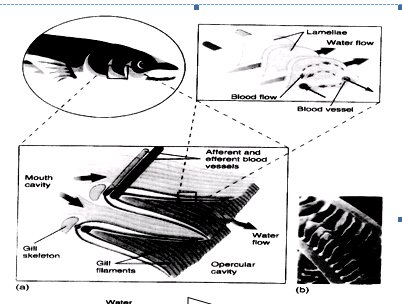
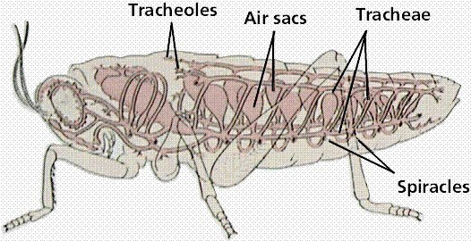
Air vs water as a medium. Air has higher O₂ concentration and is lighter, so it needs less thorough ventilation and less energy. The cost is water loss by evaporation, and the solution is to fold the respiratory surface inside the body (tracheae, lungs).
Human respiratory system
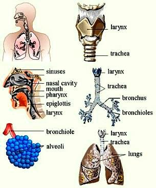
| Feature | Conducting zone | Respiratory zone |
|---|---|---|
| Function | Air conduction; filter, warm and moisten air | Gas exchange (O₂ and CO₂) |
| Structures | Nasal cavity, pharynx, larynx, trachea, bronchi, bronchioles | Respiratory bronchioles, alveolar ducts, alveoli |
| Gas exchange | None | Yes, in alveoli |
| Wall | Thicker walls, mucous lining | Thin alveolar epithelium |
| Surface area | Limited | Large (alveoli) |
Structure by structure
| Structure | Distinctive features | Function |
|---|---|---|
| Nose | Bone and cartilage outside; nasal cavities split by the nasal septum, lined with mucosa; turbinates (conchae) make air turbulent; olfactory epithelium in the roof; vibrissae (nose hairs); surrounded by paranasal sinuses | Mucus; filters, warms, moistens air; smell; stops dust from entering the lower tract; resonance for speech |
| Pharynx (throat) | Nasopharynx, oropharynx, laryngopharynx; houses tonsils | Passage for air and food; exposes the immune system to inhaled antigens |
| Larynx (voice box) | Cartilage + dense CT framework; opening (glottis) closed by the epiglottis and vocal folds; houses the true vocal cords | Air passage; keeps food out of the lower tract; voice production |
| Trachea (windpipe) | Flexible tube that splits into two primary bronchi; C-shaped cartilages, incomplete posteriorly where smooth muscle joins them | Air passage; filters, warms, moistens |
| Bronchial tree | Primary → secondary → tertiary bronchi → bronchioles; bronchiole walls have a complete layer of smooth muscle, and its constriction impedes expiration | Connects trachea to alveoli; warms and moistens |
| Alveoli | Microscopic sacs at the ends of the tree; walls of simple squamous epithelium on a thin basement membrane, wrapped in pulmonary capillaries; type II pneumocytes make surfactant | Main site of gas exchange; surfactant reduces surface tension and helps prevent collapse |
| Lungs | Paired organs in the pleural cavities; mostly alveoli and passages; stroma = fibrous elastic CT, so the lungs recoil passively when you breathe out | House the passages smaller than primary bronchi |
| Pleurae | Serous membrane: parietal pleura lines the thoracic cavity; visceral pleura covers the lungs | Lubricating fluid; separate compartments for each lung |
Tissues along the airway (link to Lecture 13)
| Where | Epithelium | Support |
|---|---|---|
| Nasal cavity, trachea, bronchi | Pseudostratified ciliated columnar with goblet cells (mucociliary escalator) | Hyaline cartilage (trachea C-rings, bronchi, larynx) |
| Epiglottis | (Stratified squamous on the side food rubs) | Elastic cartilage, so it flips down and springs back |
| Bronchioles | Simple columnar → simple cuboidal as they narrow (textbook) | No cartilage; complete smooth muscle layer |
| Alveoli | Simple squamous (type I) + type II surfactant cells; alveolar macrophages (“dust cells”) patrol the lumen | Elastic CT stroma; capillaries |
| Pleura | Simple squamous mesothelium (serous membrane) | Areolar CT |
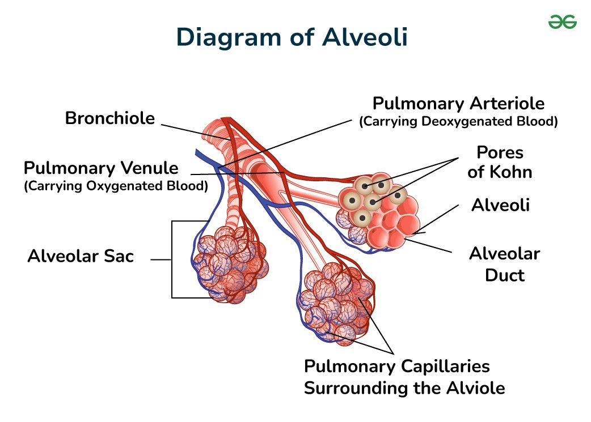
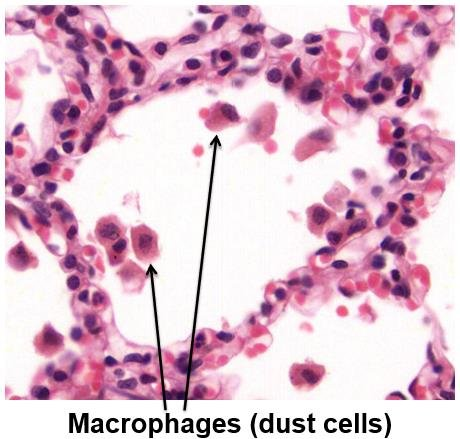
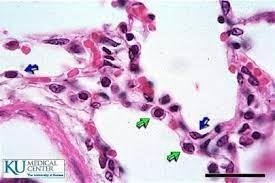
Physiology of breathing
Positive pressure breathing
Air is forced (pushed) into the lungs. A frog lowers the floor of its mouth to draw air in through the nostrils, closes them, then raises the floor to push the air into the lungs (the lecture’s frog sequence).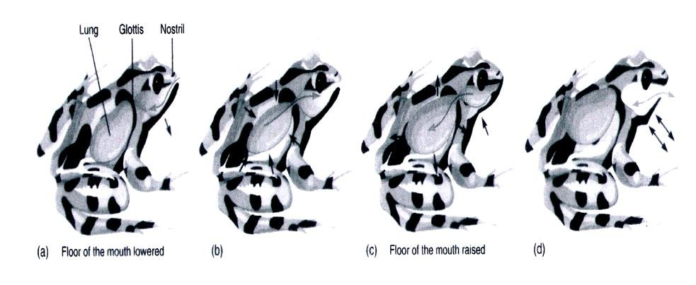
Negative pressure breathing
Air is pulled into the lungs. Mammals contract the diaphragm (it flattens) and rib muscles, so chest volume rises, lung pressure falls below the outside, and air flows in. Exhaling at rest is mostly passive elastic recoil. The lecture shows this with a bell-jar model: pull the rubber “diaphragm” down and the balloon “lung” fills.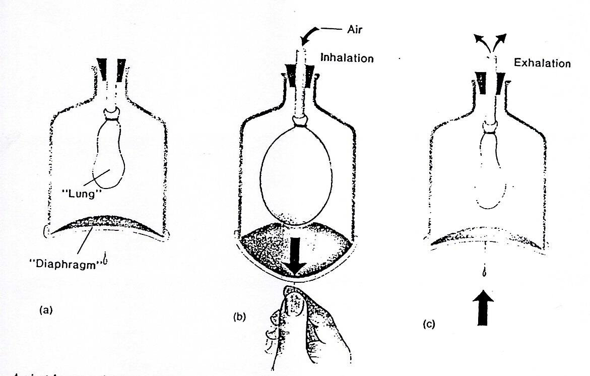
Check yourself (4)
1. Why don’t insects need blood to carry O₂? → Tracheoles deliver air directly to the cells (the tracheal system is avascular).
2. What would happen to gill efficiency if blood flowed the same direction as water? → O₂ levels would equalize midway, so far less O₂ is extracted.
3. Which cells make surfactant? → Type II pneumocytes (alveolar cells).
4. Which tissue lets the lungs recoil during expiration? → The elastic connective tissue stroma.
3D models
Drag to rotate, scroll or pinch to zoom, or use the arrow keys after clicking the model. Tap a part button to highlight it and read what it does. The connective tissue models use generated fibre, chromatin and lipid textures; they are schematic and not to scale (cells and fibres are enlarged relative to each other so you can see them).
Where the slides and textbooks disagree
On the exam, answer with what your lecturer taught. These notes are so you aren’t thrown off when a textbook or classmate says otherwise.
| Slide says | Textbook view |
|---|---|
| LA9A: simple squamous located in skin | Skin epidermis is keratinized stratified squamous. Simple squamous lines vessels, alveoli, serous membranes. |
| LA9A: loose CT located in the epidermis | The epidermis is avascular epithelium; loose (areolar) CT sits under it (papillary dermis, lamina propria, hypodermis). |
| LA9A: stratified squamous “allows diffusion and filtration” | That’s simple squamous. Stratified squamous is for protection; it’s too thick for efficient diffusion. |
| LA9A: bladder listed under nonciliated simple columnar | Bladder is lined by transitional epithelium (the handout says so too in its transitional section). |
| LA9A: simple cuboidal in “tubules of the testes” | Seminiferous tubules are lined by a specialized stratified (germinal) epithelium; simple cuboidal is in the rete testis. |
| LA9A: stratum spinosum is the thickest layer | True for thin skin. In thick skin (palms/soles), the stratum corneum is thickest. |
| LA9A: osteoclasts break down “old or damaged bone cells” | Osteoclasts resorb bone matrix (mineral + collagen), not cells. |
| L17: argentaffin cells produce gastrin | Gastrin comes from G cells (pyloric antrum). Argentaffin/enterochromaffin cells mainly make serotonin. Both are enteroendocrine cells. |
| L17: bile “breaks down fats” | Bile emulsifies (physical breakup); lipase does the chemical digestion. The same slide says bile has no enzymes. |
| L17: “cardiac sphincter” | Modern name: lower esophageal sphincter (a physiological, not anatomically thick, sphincter). |
| L14: “Hyponychium is cuticle” | The cuticle is the eponychium (the lecture’s own nail figure labels it so). Hyponychium is the skin under the free edge. |
| L18: cellular respiration “releases H₂O and water as waste” | Typo: cellular respiration releases CO₂ and water. |
| L18: alveoli “reduce surface tension” | It is the surfactant made by type II pneumocytes that lowers surface tension; the alveoli themselves are the exchange site. |
| L16: “Hyda”, “meniges”, “pia matter” | Spelling slips: Hydra, meninges, pia mater. Spell them correctly on a typed or written exam. |
| L16: each organization type and trend is numbered “1.” | Formatting slip. The order is diffuse → ladder-like → ganglionic → centralized; trends 01–05 as numbered on the hexagon figure. |
| L13: pseudostratified listed as a simple type in the tree | Consistent with textbooks: it’s one layer. Keep it under simple. |
Supplementary sources: OpenStax Anatomy & Physiology 2e (ch. 4 Tissue, ch. 5 Integumentary, ch. 12–14 Nervous, ch. 22 Respiratory, ch. 23 Digestive); Urry et al., Campbell Biology (gas exchange); Mescher, Junqueira’s Basic Histology; Kardong, Vertebrates: Comparative Anatomy.
What each tissue looks like
Every tissue card has the actual slide images from your course, a drawn view you can label, the ID clues, and its function and location. Turn on Hide names to self-test before the moving exam.
Hooks, pictures and cards
Mnemonics for every list (now including the nervous and respiratory systems) you’ll be asked to recall, labeled diagrams, the pairs people mix up most, flashcards, and a one-page cheat sheet.
Mnemonics
Epidermis, deep → surface
- Basale
- Spinosum
- Granulosum
- Lucidum (thick skin only: London is only on the Palm-and-Sole map)
- Corneum
Surface → deep: “Come, Let’s Get Sun Burned.”
Four tissue types
Epithelial · Connective · Muscle · Nervous. Order follows how much they “do”: cover → hold → move → control.
Epithelium characteristics
- Cellular (densely packed)
- Avascular
- Polarity (apical/basal)
- Specialized junctions + surface modifications
- Basement membrane
- Regenerates (active mitosis)
Glands by method of secretion
Merocrine: exocytosis (eccrine sweat) · Apocrine: apex pinches off (mammary) · Holocrine: whole cell bursts (sebaceous).
Simple squamous locations
All four are places where something must cross fast or slide smoothly.
Simple cuboidal locations
Kidney tubules · Thyroid follicles · Ovary surface · small gland Ducts.
Non-keratinized stratified squamous
Mouth, Esophagus, Vagina, Anal canal (+ outer cornea).
Pseudostratified
Trachea, nasal cavity, bronchi; cilia + goblet cells = mucociliary escalator.
Three CT fibres
Collagen = strength · Elastic = recoil · Reticular = delicate network.
Cartilage locations
Bone cells
Osteoprogenitor = the stem cell “pre-blast”.
WBCs, most → least common
Neutrophils · Lymphocytes · Monocytes · Eosinophils · Basophils. (Textbook proportions; lecture lists jobs, not ranks.)
Muscle coverings / nerve coverings
Endomysium/endoneurium = each fibre · Perimysium/perineurium = fascicle · Epimysium/epineurium = whole muscle/nerve.
Sliding filament
Nerve impulse → Ca²⁺ → troponin/tropomyosin move → myosin binds → power stroke → ATP detaches → relax (AChE).
Six nutrition processes
Ingestion · Digestion · Absorption · Transport · Assimilation · Elimination.
Alimentary canal order
Mouth · Pharynx · Esophagus · Stomach · Small intestine · Large intestine · Anus. Small intestine: “Don’t Jump In” = Duodenum, Jejunum, Ileum.
Stomach cells
Argentaffin = “silver” cells: hormones (gastrin per lecture; serotonin).
Gut hormones
Gastrin: go, secrete acid · Secretin: send bicarbonate · CCK: contract gallbladder, call pancreatic enzymes. Motilin: motility.
Gut wall layers (inside → out)
Mucosa · Submucosa · Muscularis externa · Serosa.
Liver jobs
Bile · Glycogen storage · Plasma proteins · fat-soluble Vitamins · Detox.
Abnormal skin colours
Pallor pale · Albinism no melanin · Addison’s bronze · Hematoma bruise.
Invertebrate coverings
Sponge: Pinacoderm outside, Choanoderm inside (“Protect, Catch food”) with mesohyl between. Hydra: epidermis–mesoglea–gastrodermis. Ascaris: cuticle–hypodermis–longitudinal muscles only.
Nervous system organization (simplest → centralized)
Hydra · Planaria · earthworm/insect · vertebrates.
Five evolutionary trends
Neuronal specialization · Cephalization · Centralization · Regional specialization · Increasing integration. Cephalization (head) comes before centralization (centre): H before C in “head-centre”.
Meninges, outside → in
Dura (tough) · Arachnoid (spider web) · Pia (“pious”, gentle, hugs the brain).
Diencephalon trio
Cerebellum vs brain stem
Afferent vs efferent; ANS divisions
Somatic → skeletal muscle (voluntary). Autonomic → smooth, cardiac, glands (involuntary).
Airway order
Nose · Pharynx · Larynx · Trachea · Bronchi · Bronchioles · Alveoli. Conducting zone = everything before the respiratory bronchioles.
Respiratory surface requirements
Thin · moist · large surface area · highly vascularized · in contact with air/water (+ structures that protect it).
Respiratory apparatus, simple → complex
Plasma membrane · Skin · Gills (outfoldings, counter-current) · Trachea (insects, avascular) · Lungs (infoldings, vascular).
Breathing
Type II pneumocytes make surfactant: “Two keeps the sac from shutting too.”
Diagrams
Look-alikes, side by side
Rendered at the same magnification so you can compare the clues directly. Tap an image to show its labels.
Don’t mix up
Flashcards
Space = flip · ← review again · → knew it
Cheat sheet
Reading a slide in 10 seconds
- Cells edge-to-edge on a free surface → epithelium
- Cells scattered in lots of pink/purple matrix → connective
- Long fibres, nuclei inside → muscle
- Star-shaped cells with processes → nervous
- Empty honeycomb → adipose; glassy purple + lacunae → hyaline; tree rings → bone; pale discs → blood
Epithelia
- SS: alveoli, endothelium, mesothelium, Bowman’s · diffusion/filtration
- SC: kidney tubules, thyroid, ovary, small ducts · secrete/absorb
- SCol: stomach→colon, gallbladder, uterine tube · absorb/secrete; microvilli, goblet
- PSCC: trachea, bronchi · mucus + cilia
- StSq K: epidermis · Non-K: mouth, esophagus, vagina, anus
- StCub: sweat/mammary/salivary ducts · StCol: large ducts, male urethra, conjunctiva
- Transitional: bladder, ureters, renal pelvis · stretch
Connective
- Areolar: under epithelia, around vessels · cushion, exchange
- Adipose: hypodermis, around kidney/heart/eye · energy, insulation
- Dense regular: tendon, ligament, aponeurosis
- Dense irregular: dermis, capsules, GI submucosa
- Hyaline (type II, glassy): joints, nose, trachea, ribs, growth plate
- Elastic: ear, epiglottis, Eustachian tube
- Fibro (type I, no perichondrium): discs, symphysis, menisci, TMJ
- Bone: osteon, hydroxyapatite; blast/cyte/clast
- Blood: plasma + RBC/WBC/platelets
Muscle
- Skeletal: striated, multinucleate peripheral, voluntary
- Cardiac: striated, branched, 1 central nucleus, intercalated discs
- Smooth: no striations, spindle, 1 central nucleus
- Ca²⁺ → troponin → tropomyosin moves → myosin binds → power stroke → ATP detaches
Nervous
- Dendrite in → cell body → axon out
- Glia support; myelin speeds conduction
- Endo-/peri-/epineurium
Skin
- Epidermis (K StSq) / dermis (papillary areolar + reticular dense irregular) / hypodermis (adipose)
- B-S-G-L-C deep→surface; lucidum thick skin only
- Melanocytes (basale), Langerhans (spinosum), keratohyalin + lamellated granules (granulosum)
- Sebaceous → follicle, holocrine; ceruminous → ear canal; mammary = modified apocrine
- Burns: 1st epidermis · 2nd + part dermis (blisters) · 3rd full thickness
- Frog: corneum/Malpighian/germinativum; spongiosum/compactum; mucous + poison glands
Digestive
- I-D-A-T-A-E processes
- Saliva amylase → maltose · stomach HCl pH 2 + pepsin · chief = pepsinogen, parietal = HCl
- Duodenum = digestion; jejunum/ileum = absorption; villi + microvilli
- Pancreas: enzymes + bicarbonate + insulin/glucagon · Liver: bile (emulsifies, no enzymes) · Gallbladder stores bile
- Gastrin, secretin, CCK, motilin, GLP-1
- Large intestine: water, flora, feces
- Herbivore long gut + cecum/rumen; carnivore short
- Wall: mucosa, submucosa, muscularis (circ + long), serosa
Nervous system (L16)
- Diffuse (Hydra) → ladder (flatworm) → ganglionic, ventral cord (annelid/arthropod) → centralized (vertebrate)
- Trends: neuronal spec. → cephalization → centralization → regional spec. → integration
- Cerebrum higher functions · thalamus relay · hypothalamus homeostasis · epithalamus melatonin · cerebellum balance · brain stem vital functions
- Dura → arachnoid → pia; CSF cushions
- Cord: gray central (cell bodies), white outside (myelinated axons)
- PNS: cranial, spinal nerves, ganglia · somatic = skeletal · ANS = smooth/cardiac/glands (symp., parasymp., enteric)
Respiratory (L18)
- Surface: thin, moist, large, vascular
- Gills = outfoldings, counter-current · tracheae = avascular, spiracles · lungs = infoldings, vascular
- Conducting (nose → bronchioles): filter, warm, moisten · respiratory (resp. bronchioles → alveoli): exchange
- Trachea C-cartilage open posteriorly · bronchioles all smooth muscle · alveoli simple squamous + type II surfactant + dust cells
- Elastic stroma → passive recoil · pleura parietal (wall) / visceral (lung)
- Frog positive pressure (push) · mammal negative pressure (pull)
Test yourself
Practice by section and format, or run the timed moving-exam stations. Keys: 1–4 / A–D pick, Enter submit/next, ← → move.
Moving exam simulator
Each station shows a slide. Type the tissue name, then pick its location or function before the bell. No going back, just like the real thing.